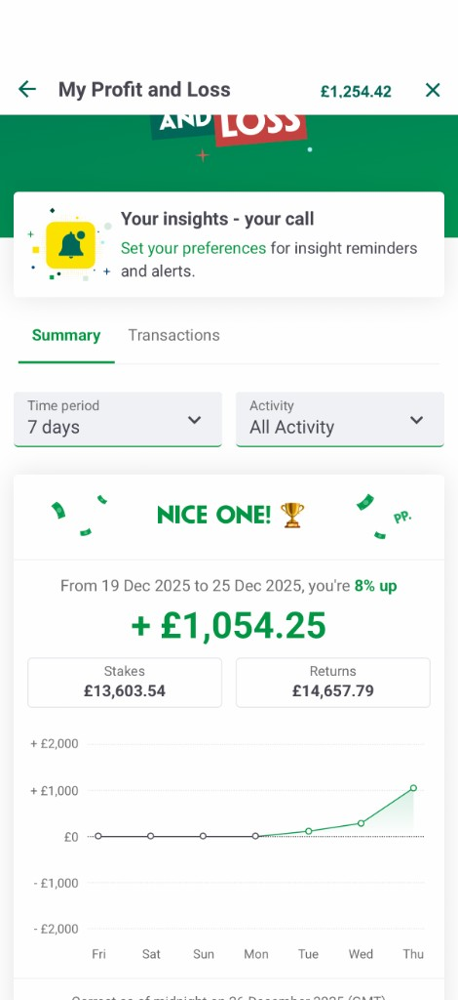
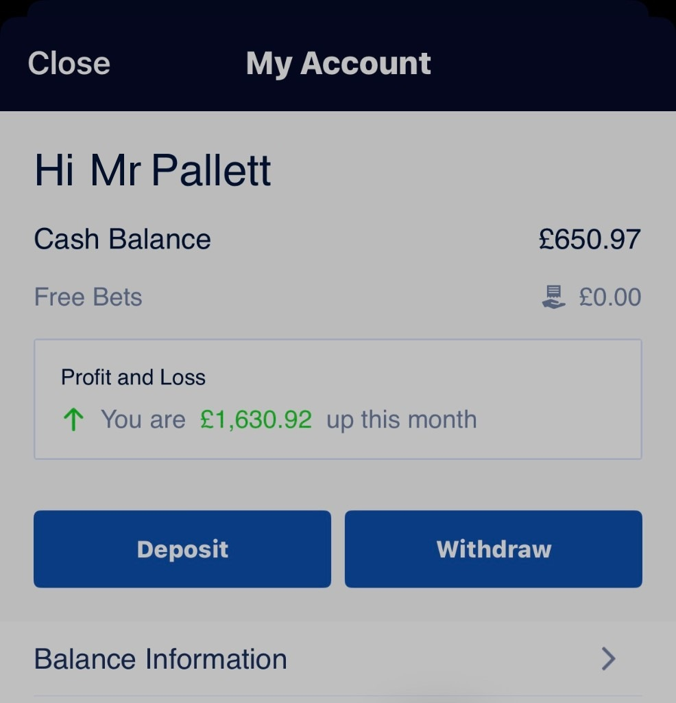
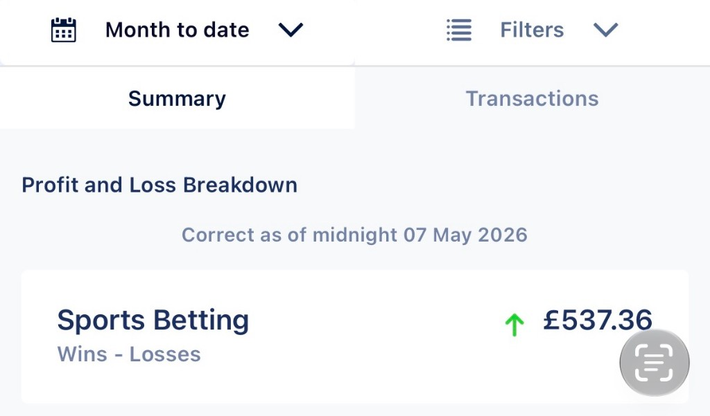
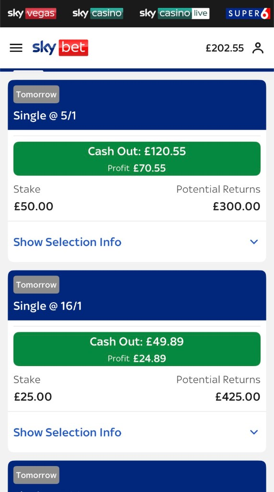
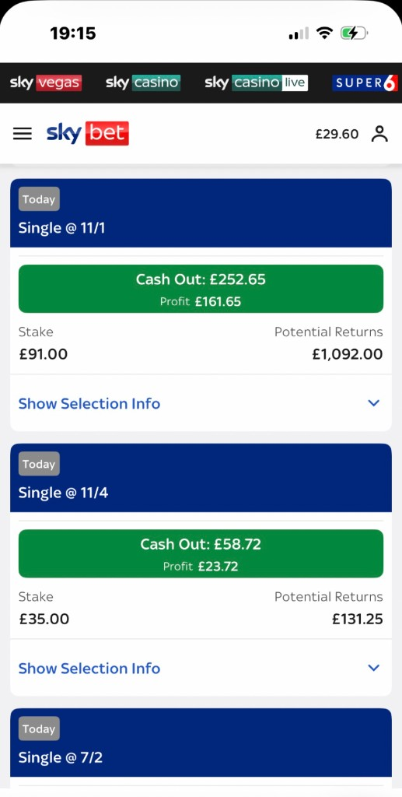
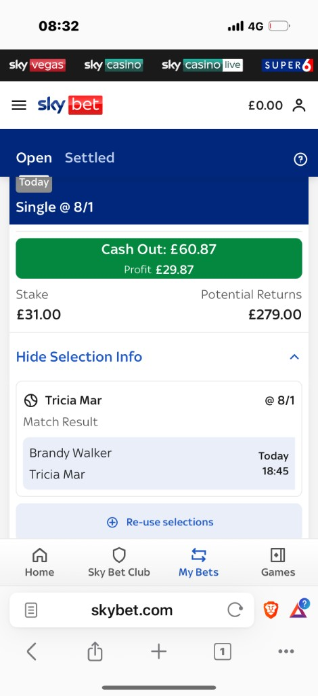

Keep a live book
The bot sat on bookmaker and exchange APIs and kept a running picture of prices. Not a daily scrape — a watch, so a move was seen as it happened.



Mispriced markets the bot found while they were still open. Arrow keys, swipe, or the buttons.



Arbitrage betting is simple on paper and miserable by hand. Two books disagree, you back both sides, and the difference is yours. The miserable part is spotting it in time. That's what Ghost Arb did — and then a sub-bot took the same alert into a Telegram group people were already paying to be in.
The watching pair, plus a sub-bot inside a paying members' group
Ran unattended. Prices in, alert out, no one sat watching a screen
Bookmaker and exchange prices pulled in as they moved
The alert landed on a phone with the market, the books and the stakes
Four jobs, in that order, every time. If any step was late, the window was gone — so the whole thing was built to be quicker than a person.
The bot sat on bookmaker and exchange APIs and kept a running picture of prices. Not a daily scrape — a watch, so a move was seen as it happened.
When two prices on the same event didn't agree, that was the arb: a short window where both sides could be backed and still leave a margin.
It calculated how much to put on each side so the return was the same whichever way the event went. No back-of-a-napkin maths at 11pm.
A message landed with the market, the books, the prices and the stakes. The same ping also went out through a sub-bot, into a Telegram group of paying members — so it reached a room, not just one phone.
The sub-bot was built for that group and wired in directly. Members were already paying to be there; Ghost Arb just made sure the useful alert arrived in the same chat, without anyone copying it across by hand.
Built in Python, talked to Telegram over the Bot API, and left to run. This is the list as it shipped — not a wishlist.
Pulled prices from bookmaker and exchange feeds as they changed, rather than waiting on a page refresh.
Lined the same event up across books so a mismatch was obvious, instead of two tabs and a guess.
Worked out both sides so the payout didn't depend on the result — that was the whole point.
It didn't ping every half-percent wobble. If the numbers weren't worth acting on, the phone stayed quiet.
Market, books, prices, stakes — one message, on the phone, while the window was still open.
Started it, left it. The pair kept watching overnight and through the afternoon without anyone at a desk.
One watched the books. One spoke Telegram. A third sat in a paying members' group and posted the same alert there — built for that room, not bolted on later.
The sub-bot was integrated straight into a Telegram group with paying members, so the people who were in on it saw the arb in the chat they already used.
The same stack we still use for bots: scrapers and alerts in Python, delivery over Telegram so it reaches a pocket — or a group — not an inbox.
Alerts, scrapers, booking bots, anything that should land on a phone instead of an inbox. Custom builds start at £349 — a few sentences is enough to start.